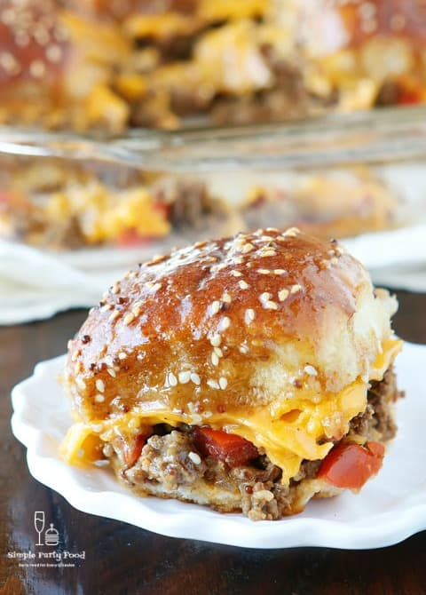

Party Sliders

Description
A popular appetizer takes on a holiday-inspired twist in these turkey, Brie, and cranberry sliders.
It will take you about 55 minutes from start to finish.
Ingredients
- 12 ounces frozen sweet potato fries
- 12 small soft rolls
- 3 tablespoons mayonnaise
- 1 heaped teaspoon whole grain mustard
- 1 pound shredded turkey meat (or sliced deli turkey)
- 7 ounces Brie cheese, cut into 1/2-inch slices
- 3 tablespoons cranberry sauce
- 1/2 cup unsalted butter, melted
- 1/2 cup freshly grated Parmesan cheese
Directions
- Gather all ingredients. Preheat oven to 425 degrees F
- Spread out sweet potato fries in a 9x13-inch dish. Bake in the preheated oven according to package directions until crisp, 10 to 12 minutes.
Tip sweet potato fries out onto a plate and set aside.
- Reduce oven temperature to 350 degrees F (175 degrees C).
- Keeping the rolls together, slice them in half horizontally with a bread knife.
Place base of the rolls into the same 9x13-inch dish you were using earlier.
Mix mustard and mayonnaise together in a small bowl and spread mizture over the cut surface.
- Spread shredded (or sliced) turkey on top of the mayonnaise, then top with crispy sweet potato fries.
Lay Brie slices evenly on top. Dot all over with spoonfuls of cranberry sauce.
- Place the tops of the rolls back on. Pour melted butter on top and evenly brush all over using a pastry brush.
- Sprinkle with Parmesan cheese.
- Bake sliders in the preheated oven at 350 degrees F (175 degrees C) until Brie is melty and Parmesan is golden, 20 to 25 minutes.